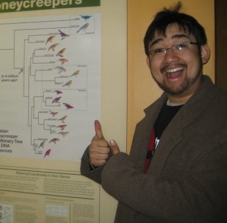

Phil Arevalo
Ph.D. Candidate, MIT Microbiology Programparevalo [at] mit [dot] edu
About
I'm a 5th year Ph.D. candidate in the Microbiology Graduate Program at MIT. Working with Martin Polz, I've spent most of my time using bioinformatics techniques to unravel the evolutionary dynamics of the Vibrionaceae to get a better understanding of how ecology and evolution interact.
Prior to my time at MIT, I completed my undergraduate degree at Brown University in Applied Mathematics-Biology and Classics doing work with Jeremy Rich to understand the community composition of anammox bacteria. I've also worked as a research assistant in the lab of Stefan Sievert at the Woods Hole Oceanographic Institution using high throughput sequencing to investigate the microbial communities at hydrothermal vents and oxygen minimum zones.
When I'm not coding the day away, I get to spend lots of time with undergraduate students as a Graduate Resident Tutor at Random Hall! I've also enjoyed doing music and theater throughout my life. I've been an active member of MIT Gilbert & Sullivan Players during my time at MIT and I also enjoy doing covers of indie rock songs, a couple of which you can listen to here.
Research
The ability of microbes to exchange genetic material truly sets them apart from other forms of life. It's probably most famous for its role in the rapid spread of antibiotic resistance, but horizontal gene transfer (HGT) is an important facet of many evolutionary and ecological processes. I want to understand how HGT functions as both as a driver of microbial diversification and a force that allows microbes to form cohesive evolutionary units.
Code
Most of my code is written in Python, although I am also familiar with MATLAB and first cut my programming teeth many moons ago using Java. You can find some of the code I've written on my github.
Publications
Hehemann, J.-H., Arevalo, P., Datta, M.S., Yu, X., Corzett, C., Preheim., S.P., Henschel, A., Timberlake, S., Alm, E.J., Polz, M.F. (2016). Adaptive radiation by waves of gene transfer leads to fine-scale resource partitioning in marine microbes. Nature Communications, 7. Article number: 12860. doi:10.1038/ncomms12860.
Chase, A.B., Arevalo, P., Polz, M.F., Berlemont, R., Martiny, J.B.H. (2016). Evidence for ecological flexibility in the cosmopolitan genus Curtobacterium. Frontiers in Microbiology, 7:1874. doi:10.3389/fmicb.2016.01874